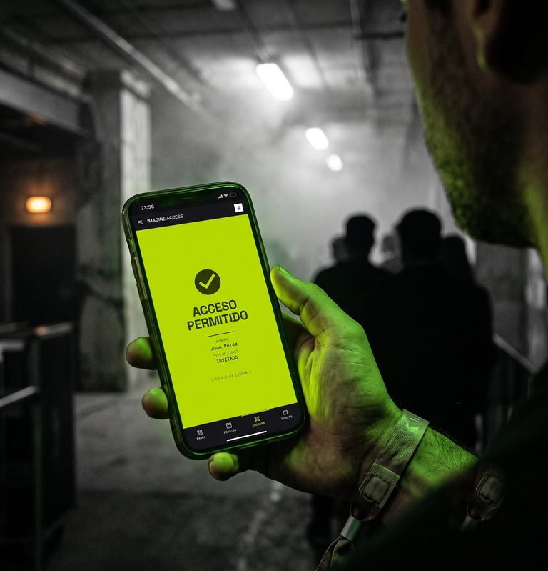
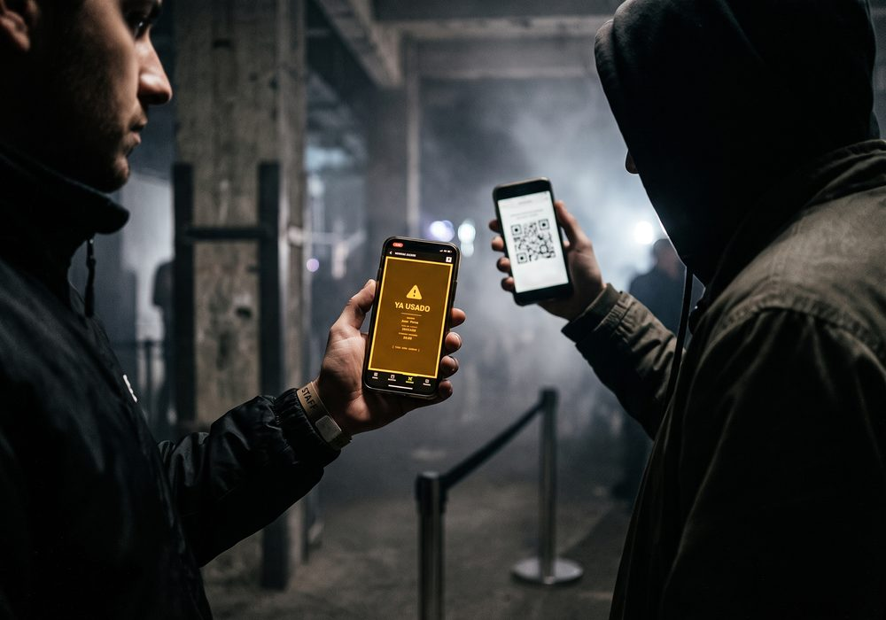
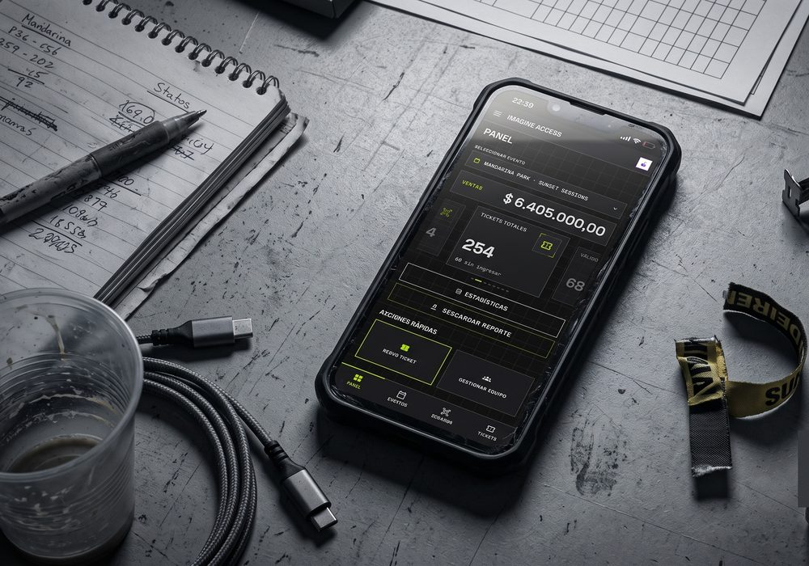

Emitís entradas con código QR, escaneás en la puerta y sabés al instante si entra o no.

Cada RRPP manda su lista a distinta hora. A las once de la noche nadie sabe cuál es la buena.
Una hoja de papel no avisa cuando un código ya entró. Con dos puertas, la misma entrada pasa dos veces.
El que compra después de que imprimiste no está en la lista. Llega, ya pagó, y se queda afuera.

Fecha, lugar y los tipos de entrada con su precio. Podés marcar hasta qué hora vale cada tipo.
Con el nombre y el correo del comprador. Si vendés un pack, se emiten todas juntas.
Con la imagen de tu evento, sus datos y su código QR. Lo puede mostrar del teléfono o imprimirlo.
Verde entra, rojo no. Si el código ya se usó, te dice a qué hora entró la primera vez.
El escáner sigue validando y guarda cada lectura en el teléfono. Cuando vuelve la conexión sincroniza todo solo, sin que hagas nada.
Podés trabajar toda la noche sin internet y ver los números completos al día siguiente.
Funciones
Cada entrada lleva su código firmado. El primero entra y el segundo no, así que la captura de pantalla que reenviaron por WhatsApp no pasa. Y el código de otra fecha tampoco sirve para la de hoy.
Marcás hasta qué hora vale cada tipo de entrada. Después de esa hora, el escáner la rechaza.
Cuántos entraron, quién vendió y cuánto falta, mientras el evento pasa. No al día siguiente con las listas de todos sobre la mesa.

El RRPP vende y ve sus ventas. La puerta solo escanea. Vos ves todo.
El ticket que recibe tu cliente lleva la imagen de tu evento, no una línea de texto plano.
Se agrega a la pantalla de inicio desde el navegador. Le pasás un link a tu equipo y ya están adentro.
Precio
Se renueva solo. Podés cortarlo cuando quieras.
Dos meses bonificados sobre el mensual.
Arrancás con 15 tickets gratis para probarlo en un evento real. Sin tarjeta y sin que te llame un vendedor.
Quince tickets gratis, sin tarjeta. Si te sirve, son 25 dólares al mes.